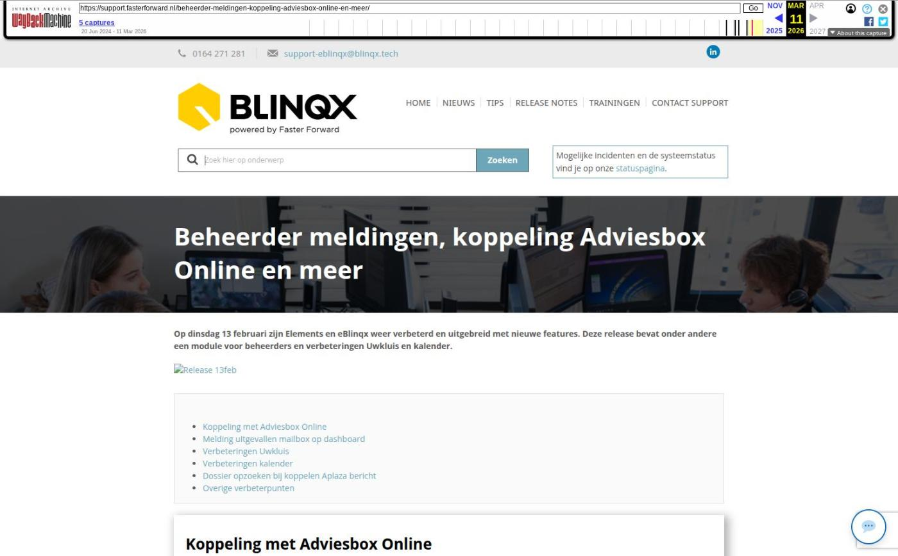

Beheerder meldingen, koppeling Adviesbox Online en meer

Tekstinhoud
Op dinsdag 13 februari zijn Elements en eBlinqx weer verbeterd en uitgebreid met nieuwe features. Deze release bevat onder andere een module voor beheerders en verbeteringen Uwkluis en kalender.
Koppeling met Adviesbox Online
Melding uitgevallen mailbox op dashboard
Verbeteringen Uwkluis
Verbeteringen kalender
Dossier opzoeken bij koppelen Aplaza bericht
Overige verbeterpunten
Koppeling met Adviesbox Online
Het is nu ook mogelijk om Elements en eBlinqx te koppelen aan Adviesbox Online. De werking blijft hetzelfde. Vanuit het dossier maak je een HBX-bestand aan en deze kan je uploaden in Adviesbox Online. In Adviesbox Online maak je de hypotheekaanvraag compleet om deze vervolgens terug naar Elements of eBlinqx te verzenden. Vanuit het klantdossier stuur je de aanvraag naar de geldverstrekker.
Het vraagt enkel wat andere inrichting in zowel Adviesbox Online als Elements of eBlinqx. In Adviesbox Online moet je verschillende gegevens invoeren. Hier lees je er meer over. Deze gegevens onder instellingen worden door ons aan jou verstrekt, zodat jij dit zelf verder kan inrichten.
Ga je gebruik maken van Adviesbox Online en wil je deze koppelen met Elements of eBlinqx? Stuur dan een e-mail naar support@fasterforward.nl.
Maak je nog geen gebruik van Adviesbox Online en wil je dit wel? Neem dan eerst contact op met Adviesbox.
Melding uitgevallen mailbox op dashboard
Vanaf nu is er voor beheerders een aparte module beschikbaar, waarin relevante meldingen over processen en instellingen worden getoond. Voor nu wordt in deze module de melding 'E-mailmanager – Synchronisatie gestopt' getoond. Onder deze melding worden alle e-mailboxen getoond, waarbij de synchronisatie is uitgevallen met een link naar de betreffende mailbox in de e-mailmanager. Zodra de interval bij deze mailbox op 'Geen' of een tijdsduur wordt gezet dan zal de melding verdwijnen.
In de toekomst zullen we meer meldingen aan de module toevoegen. Alle bij ons bekende mutatiebevoegden zijn aangemerkt als beheerder en hebben toegang tot deze module. Ben jij mutatiebevoegde en heb je geen toegang? Stuur dan een e-mail naar support@fasterforward.nl.
Verbeteringen Uwkluis
Formulieren Finly ook in Uwkluis
Vanuit Elements en eBlinqx kan je formulieren, middels de workflow, opvragen bij Finly. De opgevraagde formulieren komen nu ook in Uwkluis onder Verzoeken te staan. Zo kan de klant de formulieren gemakkelijk invullen in Uwkluis. Nadat het formulier is ingevuld, komt deze als PDF bestand in zowel het klantdossier als in Uwkluis onder Documenten te staan. Ook verdwijnt het verzoek onder het tabblad Verzoeken.
Verbeteringen kalender
Dubbele afspraak voorkomen
Je ontvangt een e-mail met daarin een uitnodiging. Vanaf nu wordt er in de e-mail een melding getoond als je al een afspraak hebt op die dag en tijd. Zo voorkom je dubbele afspraken.
Gemakkelijk bijlagen inzien
De bijlagen die gekoppeld zijn aan de afspraak kan je nu gemakkelijk inzien door middel van het vergrootglasicoon. Op deze manier hoef je ze niet meer te downloaden om het bestand te kunnen bekijken.
Preview uitnodiging gebruiksvriendelijker gemaakt
De preview van een uitnodiging is verbeterd. Het scherm is prettiger om naar te kijken. De link naar de meeting wordt nu in normale tekst weergegeven.
Voor
Na
Dossier opzoeken bij koppelen Aplaza bericht
Zoek nu gemakkelijk dossiers op bij het koppelen van het Aplaza bericht. Het kan gebeuren dat een maatschappij in het Aplaza bericht geen polisnummer mee stuurt, maar alleen een naam. De match in Elements wordt gezocht op deze naam. Er zijn soms meerdere dossiers waarin personen staan met dezelfde naam. Voorheen moest je het juiste dossier selecteren vanuit een dropdownmenu. Hierin werd niet altijd het juiste dossier getoond. Nu kan jij zelf het dossier opzoeken, waardoor het bericht aan het juiste dossier gekoppeld kan worden.
Overige verbeterpunten
Via de workflow kan je formulieren raadplegen bij Finly. De klant kan dit formulier invullen en deze komt vervolgens in Elements of eBlinqx te staan. Het kon gebeuren dat het afronden van het formulier erg lang duurde. De klant kreeg dan een wachticoon te zien, terwijl het formulier al in het dossier staat. Om dit te voorkomen hebben we de processen anders ingericht, waardoor de klant sneller ziet dat het insturen van het formulier succesvol is afgerond
In het tabblad Niet Ontvangen in de ADN module worden de opgeschorte polissen niet meer getoond
Er is nu een recht gekoppeld aan het maken van een urgente registratie. Zo kan je ervoor kiezen welke gebruikers urgente registraties mogen aanmaken en bewerken
De BNP bankgarantietarieven zijn aangepast. Dit is verwerkt in Elements en eBlinqx
Wanneer er nu alle stukken (ongeacht SP/volmacht beoordeling) vanuit de workflow worden verstuurd, wordt de status van het stuk aangepast naar 'Voorlopig akkoord'. Dit geldt voor serviceproviders
In een deelnemersdossier zie je nu ook onder het tabblad Partijen & Objecten – betreffende deelnemer – tabblad Dossier de klantdossiers waarin de deelnemer een rol heeft. Zo kan je vanuit dit tabblad zien welke dossiers onder deze deelnemer vallen
In managementinformatie – grafiek 'Aantal HDN aanvragen per week' werd het aantal aanvragen van bedrijven in Nederland getoond door middel van een grijze lijn. Deze grijze lijn is niet meer zichtbaar, omdat HDN deze informatie niet meer verstrekt
Aan de rapportage CRM – Verzekeringsportefeuille is de kolom 'CRM acties met toelichting' toegevoegd. Deze kolom staat niet standaard aan en dient aangezet te worden in Rapportage beheer
Geplaatst op 14 februari 2024 (Laatste update: 23 februari 2024)
Laatste 5 releasenotes
Verbeteringen gespreksopname en onder de motorkap »
Verbeteringen onder de motorkap en gespreksopnames »
HDN release: afscheid van HDN certificaten »
Verbeterde verwerking van grote e-mailvolumes via Office 365 en voorbereiding HDN »
Nu zelf schade- en levensverzekeringen omnummeren »